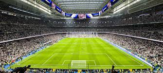
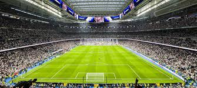

Real Madrid CF (celým názvem: Real Madrid Club de Fútbol) je španělský fotbalový klub, který sídlí v Madridu. Od sezóny 1929 hraje v Primera División, španělské nejvyšší fotbalové soutěži. Největšími rivaly Realu Madrid jsou Atlético Madrid a FC Barcelona. Kromě fotbalu má klub také oddíly pro basketbal, tenis, stolní tenis a vodní pólo. Má přezdívku „Bílý balet“. Klub byl založen v roce 1902, ale právo nosit titul Real (královský) mu bylo uděleno až v roce 1920 králem Alfonsem XIII. (v letech 1931–40 slovo Real odebráno z důvodu existence Druhé Španělské republiky). Poslední kosmetická změna názvu přišla v roce 1941, kdy bylo z názvu odstraněno anglické Football Club, které bylo nahrazeno španělským Club de Fútbol. Stalo se tak z důvodu pečlivého frankistického potírání všech anglicismů v zemi. Real hraje na stadionu Santiago Bernabéu v Madridu s kapacitou 81 044 diváků, který byl postaven v roce 1947. Klubovou historii zdobí mnoho titulů. Real vyhrál patnáctkrát Ligu mistrů UEFA (dříve Pohár mistrů evropských zemí), tedy vícekrát než kterýkoliv jiný fotbalový klub v celé Evropě. 18. prosince 2000 zvolila FIFA Real Madrid za nejlepší fotbalový klub 20. století.
.jpg)
Kylian Sanmi Mbappé Lottin (* 20. prosince 1998 Paříž) je francouzský profesionální fotbalista, který hraje na pozici útočníka či křídelníka za španělský klub Real Madrid CF a za francouzský národní tým, se kterým v roce 2018 vyhrál mistrovství světa v Rusku. Je považován za jednoho z nejlepších hráčů na světě a proslul svými driblérskými schopnostmi, výjimečnou rychlostí a zakončením
Na mezinárodní scéně:
Mistr světa 2018 (Francie).
Finalista Mistrovství světa 2022.
Vítěz Ligy národů UEFA 2020/21.
Na klubové úrovni:
6x vítěz Ligue 1 (AS Monaco, PSG).
3x vítěz Francouzského poháru.
Finalista Ligy mistrů UEFA 2019/20.
Individuální ocenění:
Nejlepší střelec Ligue 1 (6x).
Hráč roku Ligue 1 (4x).
Nejlepší střelec Mistrovství světa 2022.
Cristiano Ronaldo dos Santos Aveiro ( 5. února 1985 Funchal, Madeira) je portugalský fotbalista, útočník saúdskoarabského klubu Al-Nassr FC a kapitán portugalské reprezentance, s níž vyhrál Mistrovství Evropy 2016 a premiérový ročník Ligy národů 2018/2019. Profesionální kariéru započal ve Sportingu Lisabon, mezi roky 2003 až 2009 hrál za anglický Manchester United. Odtud přestoupil do španělského Realu Madrid za onehdy rekordní částku 80 milionů liber.[3] Od roku 2018 nastupoval za italský klub Juventus FC. V roce 2021 se vrátil do Manchesteru United a na konci roku 2022 přestoupil do saúdskoarabského týmu An-Nassr FC. Jedná se o komplexního hráče považovaného za jednoho z nejlepších fotbalistů světa. Do ledna 2021 vybojoval 33 klubových trofejí
Na mezinárodní scéně:
Mistr Evropy 2016 (Portugalsko).
Vítěz Ligy národů UEFA 2018/19.
Finalista Mistrovství Evropy 2004.
Na klubové úrovni:
5x vítěz Ligy mistrů UEFA (1x Manchester United, 4x Real Madrid).
3x mistr Premier League (Manchester United).
2x mistr La Ligy (Real Madrid).
2x mistr Serie A (Juventus).
4x vítěz MS klubů FIFA (1x Manchester United, 3x Real Madrid).
Individuální ocenění:
5x držitel Zlatého míče (Ballon d’Or).
Nejlepší střelec Ligy mistrů UEFA (7x).
Nejlepší střelec v historii Ligy mistrů UEFA.
Nejlepší střelec Realu Madrid v historii (451 gólů).

Alfredo svou aktivní hráčskou kariéru prožil v letech 1943 až 1966. Jeho největší úspěchy jsou spojeny s klubem Real Madrid, ve Španělsku žil od roku 1953. Když skončil jako aktivní fotbalista, působil jako trenér v Argentině a Španělsku. V listopadu 2000 byl jmenován čestným prezidentem Realu Madrid. V roce 2006 byl v Madridu slavnostně otevřen stadion Alfreda di Stefana, který Real používá pro své tréninky.
Na mezinárodní scéně:
Mistr Jižní Ameriky 1947 (Argentina).
Finalista Evropského poháru národů 1960 (Španělsko, jako hráč).
Na klubové úrovni:
5x vítěz Poháru mistrů evropských zemí (Real Madrid, 1956–1960).
2x vítěz Poháru Latinské Ameriky (1955, 1957).
8x mistr La Ligy (Real Madrid).
2x mistr argentinské ligy (River Plate).
3x mistr kolumbijské ligy (Millonarios).
Individuální ocenění:
2x držitel Zlatého míče (1957, 1959).
Nejlepší střelec La Ligy (5x).
Nejlepší střelec Poháru mistrů evropských zemí (2x).
Stadion Santiago Bernabéu, domov Realu Madrid, se nachází v Madridu a byl otevřen v roce 1947. S kapacitou kolem 83 000 míst (po rekonstrukci) patří mezi nejikoničtější stadiony světa a hostil významné události jako finále Mistrovství světa 1982 či finále Ligy mistrů.
Stadion je pojmenován po bývalém prezidentovi Realu, Santiagu Bernabéu, který ho pomohl postavit.
Probíhala modernizace s posuvnou střechou a hřištěm, což umožnilo pořádat koncerty a další akce.
Hostil finále Mistrovství světa 1982 a čtyři finále Ligy mistrů UEFA.
Otevřen byl 14. prosince 1947 zápasem Realu Madrid proti Belenenses (3:1).
Je ikonickou součástí Madridu a populární turistickou atrakcí.
 
